Uma foto de cada pintura das quatro fases, tirada do jogo 5 s depois de ela chegar à tela, com o tratamento que o jogo aplica hoje. Em laranja, na tabela, o que sai da faixa das outras.
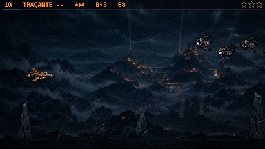
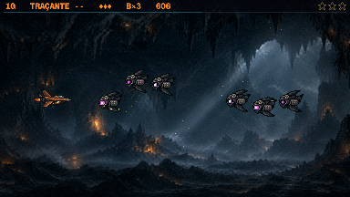
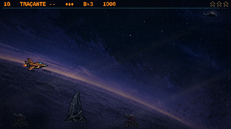
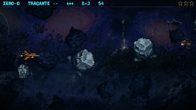
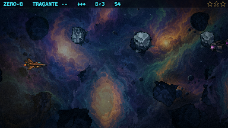
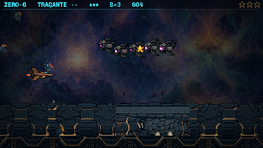
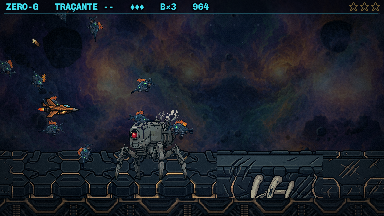
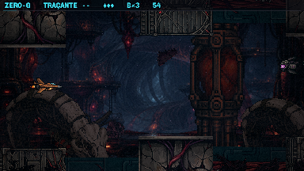
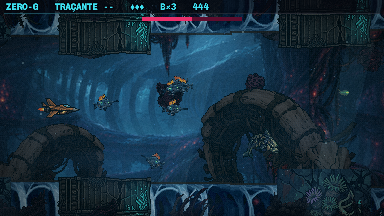
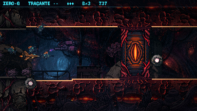
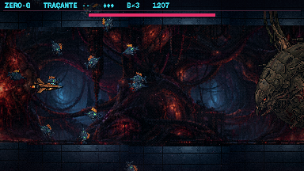
| cena | claridade média | ponto de preto (5%) | ponto de branco (95%) | saturação | névoa | grão |
|---|---|---|---|---|---|---|
| F1 · a colônia | 20.7 | 5.1 | 44.2 | 0.696 | 0.60 | 0.53 |
| F1 · a caverna | 30.5 | 4.4 | 75.3 | 0.598 | 0.68 | 0.59 |
| F1 · o zero-G | 24.4 | 6.3 | 62.3 | 0.67 | 0.60 | 0.53 |
| F2 · a frota morta | 20.1 | 4.2 | 42.9 | 0.736 | 0.60 | 0.53 |
| F3 · Ato 1, a nebulosa | 36 | 7.4 | 89.5 | 0.548 | 0.68 | 0.59 |
| F3 · o casco | 29.4 | 6 | 64 | 0.519 | 0.68 | 0.59 |
| F3 · a arena | 30.7 | 6.2 | 66.9 | 0.498 | 0.60 | 0.53 |
| F4 · câmara A | 21.8 | 3.3 | 50.3 | 0.525 | 0.68 | 0.59 |
| F4 · câmara B, a água | 41.6 | 11.4 | 89.3 | 0.671 | 0.68 | 0.59 |
| F4 · câmara C | 21.8 | 1.9 | 64.6 | 0.614 | 0.68 | 0.59 |
| F4 · câmara D | 20.5 | 2.9 | 55.9 | 0.616 | 0.68 | 0.59 |
| mediana | 24.4 | 5.1 | 64 | 0.614 |